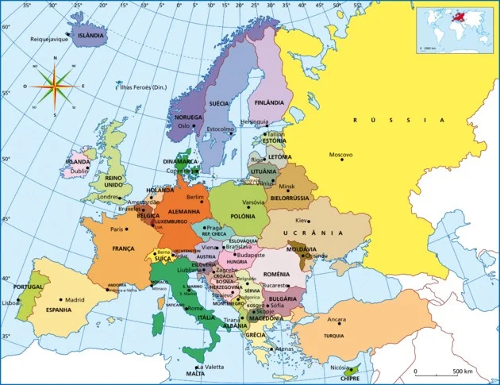
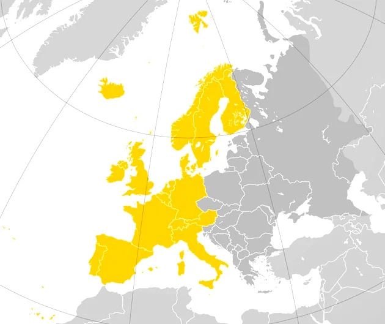
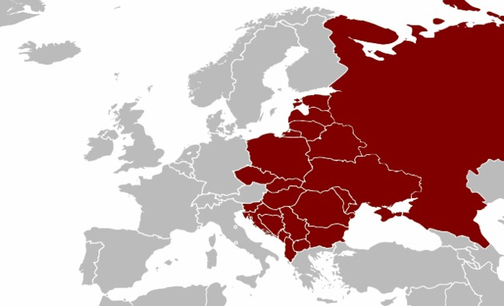

Mapa da Europa
A Europa é um dos seis continentes existentes no planeta, sendo o segundo menor em superfície terrestre, estando atrás apenas da Oceania. Com uma área de 10.498.000 km2 e uma população de 746.467.358 habitantes, o continente europeu possui 50 países independentes.
Mapa político da Europa
A Rússia é o maior país da Europa e do mundo. Com um território de 17 098 242 km2, ela localiza-se em dois continentes, no leste europeu e na Ásia (onde se concentra maior parte de suas terras), sendo que sua capital Moscou fica na parte europeia.
O menor território da Europa é o Vaticano, com uma área de 0,44 km2. Apesar de se localizar dentro de Roma, a capital da Itália, ele é um Estado independente.
A Europa se limita ao norte com o Oceano Glacial Ártico e Mar do Norte; a leste com os Montes Urais; ao sul com o Mar Mediterrâneo; e a oeste com o Oceano Atlântico.
O ponto mais alto na Europa é o Monte Elbrus, com 5.642 metros de altitude. Ele fica na Cordilheira do Cáucaso, na Rússia. Também neste país está o ponto mais baixo do continente, no Mar Cáspio, com 28 metros abaixo do nível do mar.
O país mais alto é Andorra, pois se localiza a 1.023 metros acima do nível do mar. Os Países Baixos, por outro lado, possuem partes de seu território em níveis abaixo do mar, daí seu nome.
- Istambul (Turquia), com cerca de 14 milhões de habitantes;
- Moscou (Rússia), com quase 12 milhões de habitantes;
- Londres (Inglaterra), que abriga pouco mais de 8 milhões de pessoas.
Divisão socioeconômica da Europa
Baseada nas características econômicas, políticas e humanas, classificamos a Europa em: Europa Ocidental e Europa Oriental (também chamada de Europa do Leste ou Leste Europeu).
Europa Ocidental
Onde se concentra os países desenvolvidos como, por exemplo, Alemanha, França e Reino Unido.
Europa Oriental, Europa do Leste ou Leste Europeu
Onde se concentra países menos desenvolvidos como, por exemplo, Polônia, Ucrânia e Croácia.
Regiões da Europa
O continente europeu é dividido em regiões segundo critérios espaciais e também econômicos. São quatro as regiões que compreendem o território europeu:
→ Europa Ocidental: corresponde à área dos países banhados pelo Oceano Atlântico, como os do Reino Unido e a França; países que possuem relação com o Oceano Atlântico, como a Bélgica e a Alemanha, e os países que não são banhados pelo oceano, contudo, mantêm relação com o Ocidente.
→ Europa Setentrional: corresponde à área que compreende a Escandinávia e os Países Nórdicos como também a Estônia, a Letônia e a Lituânia, por motivos econômicos e culturais.
→ Europa Centro-Oriental: corresponde à área de países como Hungria, Eslováquia, Sérvia, Eslovênia, Moldávia, Macedônia do Norte, entre outros.
→ Europa Meridional: corresponde à área de países que se encontram ao Sul do continente europeu e são banhados pelo Mar Mediterrâneo, como Portugal, Espanha, Vaticano e Turquia.
Países da Europa e suas capitais
Segue abaixo, a lista de todos os 50 países da Europa e suas respectivas capitais:
Europa Ocidental:
- Alemanha
- Áustria
- Andorra
- Bélgica
- Dinamarca
- Espanha
- Finlândia
- França
- Grécia
- Holanda (Países Baixos)
- Irlanda
- Islândia
- Itália
- Liechtenstein
- Luxemburgo
- Mônaco
- Noruega
- Portugal
- Reino Unido
- San Marino
- Suíça
- Suécia
Europa Oriental:
- Albânia
- Belarus (Bielorússia)
- Bósnia-Herzegovina
- Bulgária
- Croácia
- Eslováquia
- Eslovênia
- Estônia
- Geórgia
- Hungria
- Kosovo
- Letônia
- Lituânia
- Macedônia do Norte
- Moldávia
- Montenegro
- Polônia
- República Tcheca
- Romênia
- Rússia
- Sérvia
- Turquia
- Ucrânia
Alguns países que se encontram na Ásia estão listados como pertencentes ao leste europeu devido às suas ligações socioculturais com a Europa. Esses países são:
- Armênia
- Azerbaijão